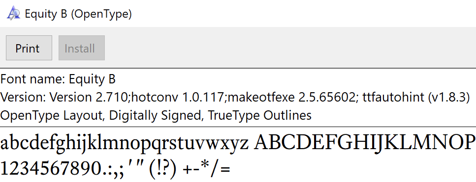
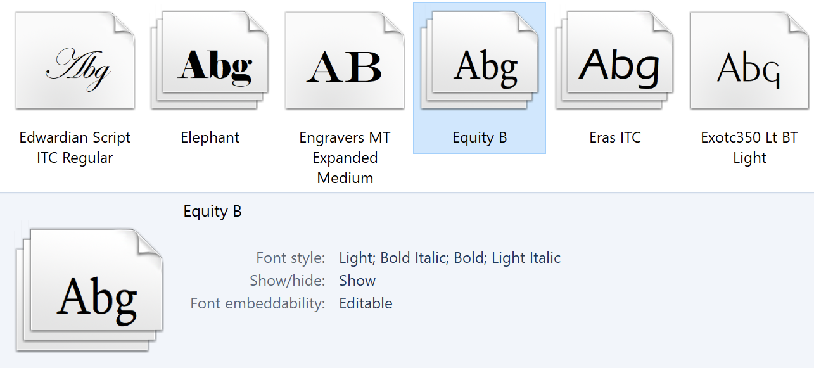

Many have told me they’d switch to professional fonts (like those shown in font recommendations) if only they could embed the fonts in a Word document (meaning, the .docx format) so that the typography & layout would be preserved when they send the document to others for further editing.
(If you just need your fonts to show up correctly in a PDF, you can ignore the rest of this page and instead read how to make a PDF. The instructions below are only necessary for embedding fonts in a Word document.)
There’s good news and bad news. The good: contrary to urban legend, it is possible to embed fonts in a Word document. The bad: the technique has some Microsoft-imposed limitations that may make the feature too disappointing to bother with. Namely—
Word can only embed fonts on your system that have been installed in the TTF format. If your font files are in the OTF format, you can’t embed them in Word documents.
How do you know which are TTF? It’s the most common format for Windows fonts, but you can verify by double-clicking the font file and looking for the label
“TrueType outlines”.
On Mac OS, open Font Book, select the font, and type ⌘I to reveal its info sheet. The
“Kind” must be“TrueType”, not“OpenType PostScript”. Unfortunately the most common format for Mac OS fonts is OpenType PostScript, so these can’t be embedded.Word can only embed fonts that are marked (by the designer or manufacturer) as permitting embedding. My fonts allow embedding, but many professional fonts unfortunately do not.
How do you know which fonts are so marked? In the Windows font explorer, look for fonts where the
“font embeddability” field is set to“editable” or“installable”. 
On Mac OS, open Font Book, select the font, and type ⌘I to reveal its info sheet. The
“Embedding” value must be“Editable” or“Installable”. Perhaps most infuriating, Word will embed any number of styles per family, but it will only display one. Meaning, if you’re using regular, italic, bold, and bold italic in your document, all four styles will be embedded. But when your recipient opens the file, only the regular will display correctly; the italic, bold, and bold italic will be Word-synthesized approximations, not the embedded fonts.
This last limitation means that Microsoft Word has reached the exalted state where it is not compatible with itself: it is writing data into its file format that it cannot read. Worst of all, this is not a bug—it’s the intended behavior.
If, having considered these limitations, you conclude that you’d rather not tangle with embedding fonts in Word, I can’t blame you. As for the fog of confusion, rage, and despair—it’s a normal side effect, and will eventually dissipate.
For the few remaining—
Read Microsoft’s support articles at your own risk:
“Document font embedding demystified” and“How to embed a TrueType font in a document”.Officially speaking, Microsoft Office doesn’t support any user-installed fonts on Mac OS. I salute the outlaws who persist.